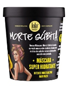
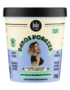
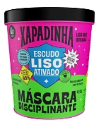
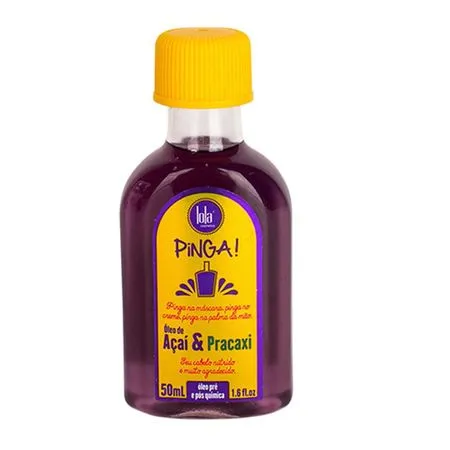
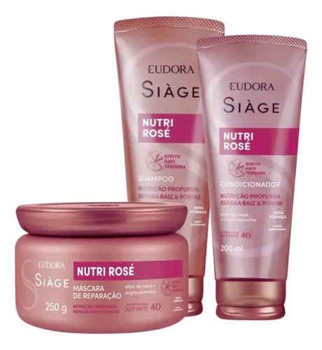
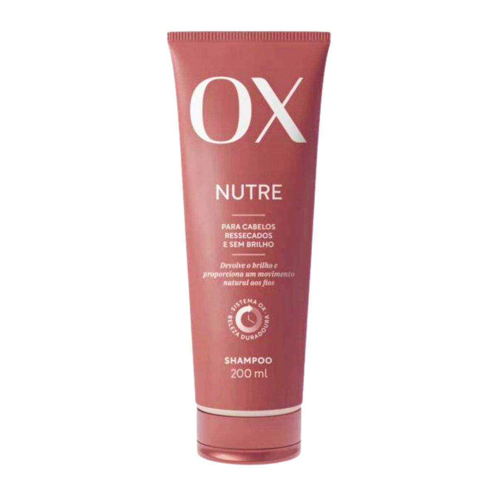
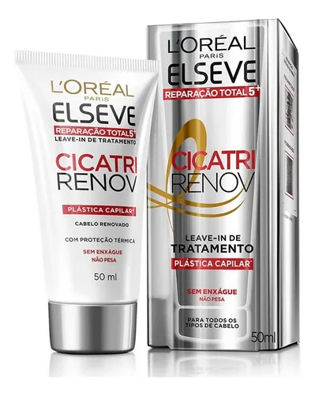

⭐ Avaliação
⭐ 4.8
Máscara hidratante que ajuda a recuperar cabelos secos e danificados. Deixa os fios mais macios, brilhantes e fáceis de pentear, com hidratação intensa.

⭐ Avaliação
⭐ 4.6
Máscara de tratamento que ajuda a reparar cabelos danificados por química, calor e agressões diárias. Promove hidratação, fortalecimento e mais brilho aos fios.

⭐ Avaliação
⭐ 4.7
Máscara disciplinante que ajuda a reduzir o frizz e alinhar os fios. Deixa o cabelo mais macio, brilhante e com aparência mais lisa, facilitando a finalização.

⭐ Avaliação
⭐ 4.9
Óleo capilar leve que ajuda a controlar o frizz, dar brilho e proteger os fios. Nutre o cabelo sem pesar, deixando-o mais macio e com aspecto saudável.

⭐ Avaliação
⭐ 4.9
Kit completo para cabelos secos e sem brilho. Limpa, hidrata e nutre os fios, deixando o cabelo mais macio, sedoso e com aspecto saudável desde as primeiras aplicações.

⭐ Avaliação
⭐ 4.7
Shampoo que limpa os fios sem ressecar, ajudando a manter o cabelo hidratado e saudável. Possui fórmulas para diferentes necessidades, deixando os cabelos macios e brilhantes.

⭐ Avaliação
⭐ 4.8
Protetor térmico que ajuda a proteger os fios do calor da secadora, chapinha e modelador. Reduz os danos causados pelas altas temperaturas, deixando o cabelo mais macio e com menos frizz.